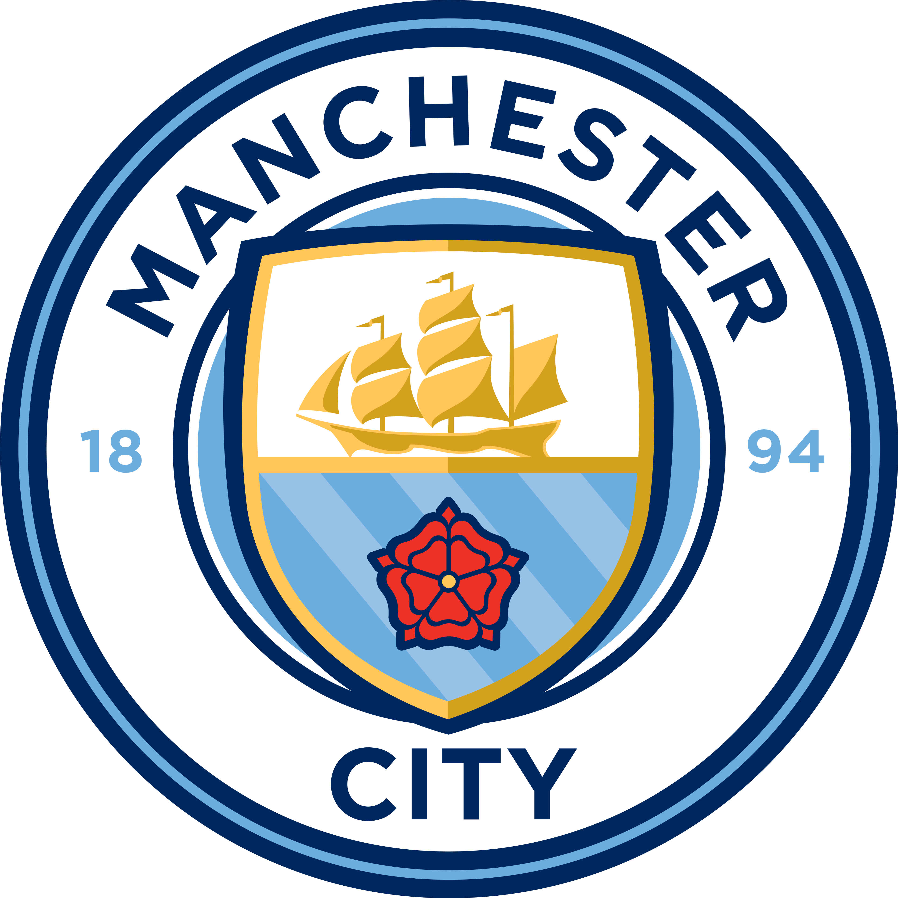

Manchester City: El vigente campeón

Bajo el mando de Pep Guardiola, los "Citizens" han dominado la liga en los últimos años, destacando por su estilo de posesión y precisión táctica.

Bajo el mando de Pep Guardiola, los "Citizens" han dominado la liga en los últimos años, destacando por su estilo de posesión y precisión táctica.